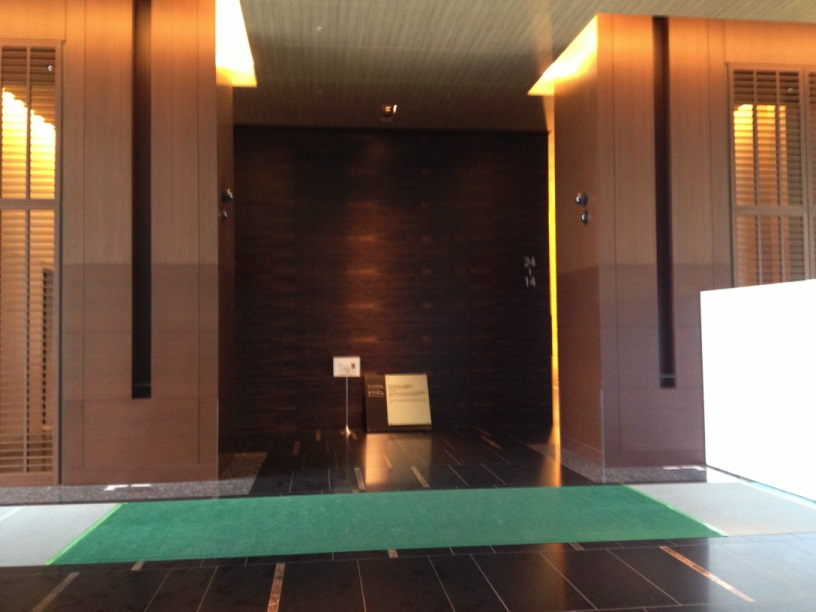

Python Developers Festa2013.07に参加しました #pyfes
Python Developers Festa2013.07に参加しました 当日は大きく分けて
- ハンズオン、野良ハンズオン
- 発表(プレゼン、LT)
が行われました。
{kind=link}

写真はゲートがなくなっていたので記念に撮りました。
前回の様子
Python Developers Festa2013.03に参加しました #pyfes — kashew_nuts-blog
イベント詳細
- Python Developers Festa 2013.07 (一般枠) - connpass
- pyfes/201307.rst at develop · pyspa/pyfes
- Google+ - Python Developers Festa 2013.07
Togetter
- Python Developers Festa 2013.07 #PyFes - 開始まで - Togetter
- Python Developers Festa 2013.07 #PyFes - ハンズオン - Togetter
- Python Developers Festa 2013.07 #PyFes - 発表1 - Togetter
- Python Developers Festa 2013.07 #PyFes - 発表2 - Togetter
- Python Developers Festa 2013.07 #PyFes - 発表3 - Togetter
- Python Developers Festa 2013.07 #PyFes - 発表4 - Togetter
- Python Developers Festa 2013.07 #PyFes - 終了後 - Togetter
午前中〜プレゼン開始まで
fabricハンズオンに参加しました。
ハンズオン資料: drillbits/pyfes_fabric
要点メモ
- fabなんでもできるけど、なんでもやり始めたら負け。
- 繰り返し同じ環境を作るなら(冪等性を確保したいなら) ansible や chef
- chef, ansible はきちんと設計。毎回同じ環境。
- fabtools でゆるい依存関係を保つ。
- require tools で必要なツールを指定。冪等性はない。
- fabric 周りの人はUbuntuの人が多い。chefもレシピがUbuntuメイン。
- cuisine, fabtools を入れるとインストール周りの冪等性を担保してくれたり便利。
発表(プレゼン, LT)
14:10頃から開始。発表の数も多くなかったこともあり、順調に進んだ気がします。18:00には終了。
@ryu22e PyCon APAC 2013 in Japan 開催します！
- スライド: PyCon APAC 2013 in Japan 開催します! #pyconapac #pyconjp
- Webエンジニア JavaとかPythonとか
- PyCon ってそもそもなんだろうという話
- 世界各国で開催されている。Python の国際的なカンファレンス
- 今年は PyCon Apac を日本でやります
- テーマ:「The Year of Python」
- 英語のトラックを増やします。初級者〜上級者まで楽しめる
- 場所, 日程: 工学院大学新宿キャンパス 9/14〜9/16
- 参加者募集中
@__Egi パターンマッチ指向プログラミング言語 Egison
- スライド: egison.pira.jp/files/pyfes.pdf
- お仕事募集中です。
- Egisonとは…世界で初めて集合に対するパターンマッチを直接的に表現することを可能にしたプログラミング言語
- パターンマッチとは…「データの分解」とその結果に基づく「条件分岐」を簡潔に表現する
- 何重にもネストするデストラクタの適用を書かなくてよくなる
- Egisonのパターンマッチには非常に広い応用範囲がある
- 強力なパターンの表現力を活かした大規模データ解析
- プログラムの自動並列化による超高速計算
- Egison - プログラミング言語
@torufurukawa おまえらこのライブラリ使ってないの？ m9
- スライド: おまえらこのライブラリ使ってないの? m9 (2013-07)
- 主催からアサインされたタイトルです。
- #bucho
- 最近program書かせてもらえなくない。Excelで仕様書いたり。
- 仮想環境, Shell環境, コーディングスタイル, テストについて。 追加は #pyfes #m9 でツイートして下さい。
- 仮想環境: virtualenv(2.x), venv(3.x), virtualenvwrapper(2.x, 3.x)
- 対話Shell拡張: Python ls とか cd とかできる。
- コーディングスタイル: pep8, pyflakes, flake8 (pyflakes+pep8), misspellings
- 便利モジュール: requests (urllib わかりにくい) requests.json()が便利。postとかもある。
- テスト: py.test エラーをきれいに見せてくれる。watchdog を使ってファイル監視も実施。
@ojodotch Django CMS
- Django CMS core developer
- 英語ワカラナイ。のでTweetから引用。
http://twitter.com/eslar/status/361004870733533184
http://twitter.com/eslar/status/361007153328291840
http://twitter.com/ymotongpoo/status/361008716788662272
@ajiyoshi Erlang & RTB
- スライド: Erlang & RTB
- RTB…Real Time Bidding 広告の価格をリアルタイムのオークションで決める仕組み
- Erlang で作りました。堅牢、安定。軽量プロセス、非同期プログラミングを簡潔に記述
- 起動方法、設定方法などが共通化、抽象化されているし、 依存関係の初期化や起動は標準で面倒みてくれるんだ。そうErlangならね。
- 「Erlang は実用的な言語です。」
@oza_x86 Spark/Shark
- 「@shiumachi さんのスライドからパクってきたんですけど」
- Spark: 機械学習の処理基盤
- Shark: Spark のSQLインターフェース。 Hadoop の Hive。Spark との親和性を重視
- Hadoopはお手軽。チェックポイントを自動でとってくれる。
- SparkはScalaやPythonで書かないといけない。チェックポイントは自分で。起動は速い。 DSLを書かないといけないので、お気楽には書けない。
- Spark | Lightning-Fast Cluster Computing
- Home · amplab/shark Wiki
@shiumachi Fabric + Amazon EC2 で快適サポート生活
- スライド: Fabric + Amazon EC2で快適サポート生活 #PyFes
- 実際に仕事でどのように使っているか。
- Fabric とは: Python 製のデプロイ・システム管理支援ツール。コマンドをSSHで実行。
- ベンダーサポートのメインっ業務は障害対応。検証環境を用意する必要がある。
- 解決策: fabric + EC2 インスタンス 環境の組み合わせ数が多く、しかも毎回異なる。環境は使い捨て。
- EC2インスタンス 安い。永続化できない。(停止したら即削除)
- 基本VMを使う。EC2はサーバー間の通信の問題や、組み合わせ時の調査
- サポートのFabricの使い方「手順書書くよりFabric」「メモ帳に残すよりFabric」
- 自動・手動のバランスを取りましょう。
@ymotongpoo Packer
- スライド: 20130727 Packerの紹介 (Python Developers Festa 2013.07) // Speaker Deck
- Go が好きです。
- Packerってなに？vagrantの作者が作った。Go製。
- プロビジョニングツール
- vagrantやfabricは基本的なOSイメージの上に設定を行う。 Packerはそもそものマシンイメージを作成する。veeweeとやっていることは近い。
- 対応プラットフォーム: AWS, DigitalOcean, vmware, virtual box
- 設定ファイルはJSON形式
- プロビジョニングを語る前にマシンイメージのことを考えよう
@moriyoshi
- JS書いてる方？関数型言語書いてる方？PHPを書いている方？ →3回とも手を上げられた方がいますね。
- 手続き型言語の良さとは。
- 思考の過程をコードに表す。→結局は好き好き？
- CoffeeScript: JS like な JS を生成する言語。
- 究極のスクリプト言語、 AtsuoScript 作りました。
- 「COBOLに強い影響を受けております。」
- 「抵抗なくJSを書くことができるのでは無いかと」
- 元ネタ: Mammouth
@hiroki_ninuma
- Web魚拓の中の人
- 握力について15分語る
- TFCC損傷コワイ。
@tk0miya Sphinx本はじめました。
- 今回の #pyfes はこれで終了です。
- Sphinx 本の宣伝にきました。pyfes の大トリって緊張しますね。
- Sphinx を専門で扱っている書籍は一冊もでていませんでした。
- タイトル: 「はじめてのSphinx」(仮)
- 9月出版を目標に執筆中。電子書籍として出版予定。
- 仕事で使い始めたい人 周囲に広めるためにも。
懇談会
いってきます。
いってきました。人数が多かったこともあり、2つにわかれることになりました。 店内にいる間に大雨になって外では色々大変だったようですが、こちらはそんなことも気にせず 楽しく過ごすことができました。
終わりに
次回の日程は11月頃とのことです。また参加できることを願います。
(第33回)Python mini Hack-a-thon に参加してきた #pyhack
当日のイベントページはこちら→ (第33回)Python mini Hack-a-thon - connpass

同日に python django 基礎 : ATND もあり、 どちらに参加するか悩みましたが、こちらに参加することにしました。
当日やったこと
- +lua 対応した MacVim-KaoriYa 試す
- Django 環境構築
+lua 対応した MacVim-KaoriYa 試す
前々から 暗黒美夢王 さん作の neocomplete.vim を使いたいと思っていました。
neocomplete.vim とは neocomplcache.vim の後継で、大きく以下のような特徴があります。
- Vim が +lua かつ、パッチが885以降あてられていることが必要
- neocomplcache.vim よりも高速に補完できる
これを導入するためには Macports を使用している自分には敷居が高かったのですが、 (Homebrew ユーザは比較的容易に導入可能) 20130711版でようやくこの条件がそろったので、 導入してみました。
- .pkg ファイルから lua をインストール
- NeoBundle.vim で neocomplete.vim を入れる……が、エラーをはきまくってしかたない。
しかしpyhackの日に以下のようなアドバイスを頂きました。
https://twitter.com/splhack/status/355800024719953922
https://twitter.com/splhack/status/355864980580610048
そこで一度やり直して見ることに。
- pkgutil を使用して lua をアンインストール
- Macports で lua インストールし直すも liblua.dyld が入っていない
- Mac OS X で Lua を使う : Sadayuki は こんな人 を参考にようやく liblua.dyld が入る。
- これで neocomplete.vim がエラーなく使えるようになる！
しかしお昼を食べてきた後……
https://twitter.com/splhack/status/355920403270610944
午前中の苦労は何だったろう…… いや、あれは必要な犠牲だったんだ(遠い目)
現在は MacVim-KaoriYa 20130713テスト版 を使用して安定稼働しております。
Django 環境構築
最初は Simple Django Example | Authomatic を見ていたのですが、途中で飽きてしまったので、別のことをしました。
これまで Django を試す時は DB は SQLite を使用して、結果は
python manage.py runserver
とコマンドを打って結果がどうなっているのか確認してきましたが、 「一度本番環境に近い環境を作ってみたい」と思い試してみました。
Apache2, MySQL を導入し、Hello, Wold! を表示するのを目標にしてスタート。
まずは Macports で以下をイントール。
- apache2
- mod_wsgi
- mysql5
- mysql5-server
- py27-mysql
途中はまったところは以下。
「ソケットにアクセスできない」と怒られる。(以下エラーメッセージ)
ERROR 2002 (HY000): Can't connect to local MySQL server through socket '/opt/local/var/run/mysql5/mysqld.sock'
解決策
うずら技術メモ を参照
MySQLdb がないと怒られる。No module named MySQLdb
解決策
Macports で入れた py27-mysql をアンインストールし、How to install MySQLdb (Python data access library to MySQL) on Mac OS X? - Stack Overflow を参考に、 MySQL for Python を入れなおす。
mysql_config がないと怒られる
解決策
Mac OS X 10.6.4 における mysql-python のインストールと Django のデータベース設定 | 暇人じゃない を参照
それでも同じエラーがでたので、シンボリックリンクを貼る。
sudo ln -s /opt/local/bin/mysql_config5 /opt/local/bin/mysql_config
文字化けしたメッセージがブラウザに表示される
解決策
未解決。
python manage.py runserver
とコマンドを打つとブラウザに Hello, World! が表示されることは確認しているので、 Apache2 の設定がうまくいっていないものと思われる。 virtualenv を使っていたりするのも関係しているのかな。 Mac と Linux での違いもあるかもしれないがよくわかっていない。
以下を参考にして Apache2 の設定をしたが、結果変わらず……
pyhack終了後
お酒を飲めるような体調ではなかったのと、続きをやりたかったので今回は懇談会には不参加。 結局目標としていたところまでは行かなかったけど、 他にも以下のようなリンクを見つけたので、また時間を取って試してみようと思う。
TinkererでBlogを書こう(Ver1.2)
昨年末 Sphinx Advent Calendar 2012 - connpass で Tinkererでブログを書こう — kashew_nuts-blog という記事を書きましたが、 Tinkerer も Version が1.2になり、運用方法も記事を書いた時と変わってきたので、改めて書き直してみます。
Tinkererとは
Tinkerer とはSphinxを使った Blog 作成ツールです。 Sphinx Advent Calendar 2012 (全部俺) の @usaturn さんや、 Sphinx Advent Calendar 2012 主催の @r_rudi さんもTinkererを使用しています。今回はそのTinkererについて導入から実際に公開するまでの一連の流れを紹介してみたいと思います。
bitbucketの準備
bitbucketに以下の名前でリポジトリ作成
<username>.bitbucket.org (private レポジトリ)
Note
<username>には_(アンダーバー)などの記号を含まないほうが無難です。記号が含まれていた場合、Twitterのような外部サービスと連携したい時に問題が発生することがあります。私のアカウント名は通常 kashew_nuts を使用していますが、そのままのアカウントで作成すると、Tweetボタンで Blog のURLが作成されず困りました。
初期設定
以下のようにすると Blog を書くのに必要なファイル類ができあがります。
$ pip install tinkerer # Tinkererのインストール
$ mkdir myblog
$ cd myblog
$ tinkerer -s # Tinkererの初期セットアップ
次に Blog のタイトルやあなたの名前を登録しましょう。 お好きなエディタで conf.py を編集します。 私は普段 Vim を使用しているので Vim で書きます。 シンタックスハイライトが特別な設定なしで使えるため非常に便利です。
$ vim conf.py
例として以下に私が設定している conf.py を上げたいと思います。 ‘’でくくられている箇所をお好きな内容に変えて設定して下さい。
# Change this to the name of your blog
project = 'kashew_nuts-blog'
# Change this to the tagline of your blog
tagline = 'Load To Pythonista'
# Change this to your name
author = 'Kashun YOSHIDA'
# Change this to your copyright string
copyright = '2011-2013, ' + author
# Change this to your blog root URL (required for RSS feed)
website = 'http://kashewnuts.github.io/'
これで、Tinkererで Blog を書く初期設定は終了です。
Blog を書こう
$ tinkerer -p "first post" # 記事の下書き作成
$ vim 2013/06/16/first_post.rst # 記事の作成
$ tinkerer -b # 記事のHTMLを作成
これで、blog/html/ 以下に記事が作成されます。 どんな記事が作成されたのか、以下のコマンドを打って確認してみましょう。
$ python -m SimpleHTTPServer
ネットワーク受信接続の許可を求められますので、 許可 を選択して下さい。ブラウザのロケーションバーに http://127.0.0.1:8000 とタイプすると、あなたが作成した記事を確認することができます。
Note
SimpleHTTPSererのデフォルトのポート番号は8000ですが、以下のように記述するとポート番号を指定できます。この例ではポート番号を8080に設定しています。
$ python -m SimpleHTTPServer 8080
Blog を公開しよう
いくつかあるようですが、ここは私が実際に使用している方法を紹介したいと思います。 初めに準備した bitbucket リポジトリに以下の内容を上げてしまいましょう。
前回書いた記事 では index.html と blog/ 以下全てと書きましたが、 これだと Blog を開いた時に、http://hogehoge.bitbucket.io/blog/html/index.html と長ったらしいURLになってしまいます。
そこで今回は “blog/html/ 以下全て” の生成物を上げます。
Warning
くれぐれも以下の操作を blog/html/ 以下で行わないで下さい。Tinkerer は “tinker -b” で ファイルを生成するたびにファイルを全て新しく作り直すので、Mercurial の管理情報が消え、 新しい記事を挙げることができなくなります！
これを一番シンプルな方法は、”tinker -b” で生成した “blog/html/” 以下の生成物を myblog とは別のディレクトリで管理することです。
Mercurial を使用した方法を記述します。
# Blog 管理用ディレクトリの準備
$ mkdir public
$ cp -R blog/html/ public/. # スクリプト化すると便利です。
$ cd public
# Mercurial 初期設定
$ hg init
$ vim .hg/hgrc
[paths]
default=ssh://hg@bitbucket.io/<username>/<username>.bitbucket.org
# Blog にpush
$ hg add .
$ hg commit -m "first post"
$ hg push
公開されるまでに数分程度待つかもしれません。数分後 https://<username>.bitbucket.io にアクセスすると、 Blog ページが表示できるようになります。
NEXT STEP
以上で Blog を書く環境が整ったと思いますが、Tinkerer では他の Blog と同じように色々とカス タマイズができます。 事例を紹介しますので、興味を持たれた方は是非挑戦してみて下さい。
- サイドバーに項目追加
- Recent Posts, Tags, Categories
- Twitter Widget
- Search Box
- 記事へ埋め込み
- Twitter のつぶやき
- gist
- コメント欄の追加(Disqus, Facebook)
- Google Analytics の設定
- テーマのカスタマイズ
- Favicon の設定